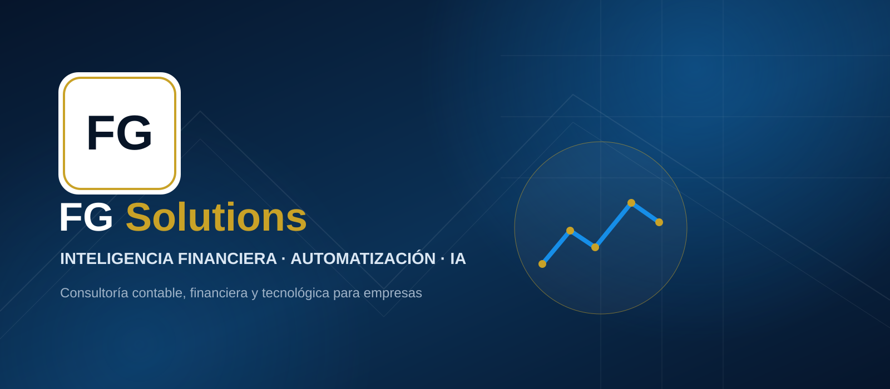

▥
Business Intelligence & Dashboards
Visualizá tus datos y tomá decisiones basadas en información real.

Consultoría financiera & tecnología
Ayudamos a PyMEs y empresas a optimizar su gestión financiera, automatizar procesos y crecer con el poder de la información.

Nuestros servicios
Combinamos los servicios profesionales tradicionales de un estudio contable con control de gestión, tecnología, automatización y Business Intelligence.
Visualizá tus datos y tomá decisiones basadas en información real.
Eliminá tareas manuales, integrá sistemas y ganá productividad.
Evaluamos tus procesos, identificamos riesgos y fortalecemos controles.
Modelos y análisis predictivos para anticiparte y crecer.
Acompañamiento para crecer con foco en rentabilidad y resultados.
Planificación, liquidación, presentación y seguimiento de obligaciones fiscales.
Gestión integral de obligaciones fiscales provinciales y municipales según la actividad.
Liquidación y administración de haberes con seguimiento de las obligaciones laborales.
Registración, análisis y cierre contable para contar con información confiable y oportuna.
Trabajos de auditoría y revisión orientados a brindar confiabilidad sobre la información financiera.
Acompañamiento contable, impositivo y financiero para la administración y crecimiento de empresas.
Foco en control y gestión
Ayudamos a tu empresa a tener control, detectar oportunidades y tomar decisiones con información confiable.
Entregamos un informe ejecutivo con hallazgos, riesgos, recomendaciones y plan de acción priorizado.
¿Por qué elegir FG Solutions?
Experiencia profesional aplicada a contabilidad, control de gestión, auditoría y finanzas en PyMEs.
Trabajamos con información real de tu empresa garantizando máxima confidencialidad.
Nos enfocamos en generar mejoras medibles y sostenibles en el tiempo.
Utilizamos herramientas para automatizar, integrar y visualizar la información.
Metodología
Comprendemos procesos, datos, sistemas y riesgos.
Priorizamos oportunidades y definimos un plan de acción.
Aplicamos mejoras, controles y automatizaciones.
Medimos resultados y acompañamos la evolución.
Aplicaciones
Detección de diferencias entre facturación y recaudación por medio de pago y unidad.
Protocolos para controlar productos enviados, vendidos y existencia física.
Indicadores y reportes ejecutivos para mejorar la toma de decisiones.
Contanos tu desafío y evaluamos juntos el mejor camino.
Contacto
Respuesta en menos de 24 horas hábiles. Consulta inicial sin compromiso.